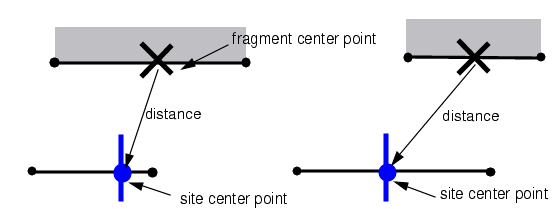
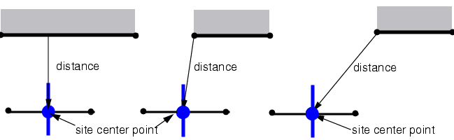
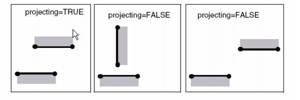
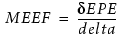
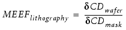
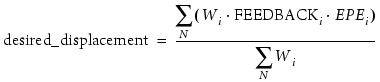
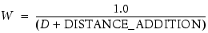
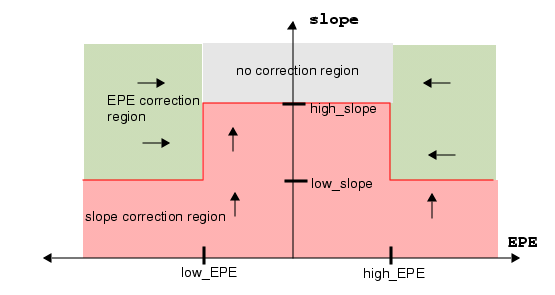
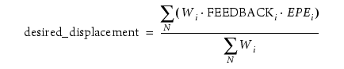

MATRIX_OPC
Type: Tagging Commands. Used by Calibre OPCpro, Calibre ORC, and Calibre PRINTimage.
Runs Matrix OPC, a feature for multiple mask OPC.
Usage
MATRIX_OPC ‘{’
METHOD {CLOSEST | AVERAGE n | NON_MATRIX}
SEARCH dist
METRIC { MIDPOINT| CLOSEPOINT |
WEIGHTED_EUCLIDEAN w |
WEIGHTED_PROJECTING w |
EUCLIDEAN| PROJECTING }
[PARALLEL_PROJ_MULTIPLIER w] [PARALLEL_ONLY {YES | NO}]
[MAP_PRIORITY layer tag priority]
[MAP_DISTANCE_MULTIPLIER layer tag mult]
MEEF_MODE {thresh | MODEL [NORECYCLE |
RECYCLE INITIAL_THRESHOLD {t | REFERENCE_THRESHOLD}] }
DELTA delta
[DISTANCE_ADDITION value]
[OPTSLOPE {YES | NO}]
[SLOPESTEPSIZE dist]
[MINSLOPE val] [slopeToleranceTag tag low_slope [high_slope]]
‘}’
Arguments
- ‘{’ and ‘}’
Braces must surround all keywords that apply solely to Matrix OPC. In addition,
The opening brace must be on the same line as the MATRIX_OPC keyword.
ONLY those keywords that apply solely to Matrix OPC can be included within the braces.
Matrix OPC keywords cannot be on the same line as the braces.
- METHOD {CLOSEST| AVERAGE n | NON_MATRIX}
A required argument defining the calculation for the MEEF matrix. Options are:
CLOSEST — Each movable fragment is controlled by control at most ONE site, whose EPE drives its movement. The site chosen is the closest one, using the defined METRIC.
AVERAGE n — Picks the n closest sites to each movable fragment and makes the EPE at all n of those sites responsible for corrections to the movable fragment. The n closest sites are determined using the METRIC of choice.
NON_MATRIX — Used with binary masks (no correction layers are present) to prohibit corrections. When specified, the MATRIX_OPC operation only calculates the MEEF for fragments, which can then be used for MEEF tagging.
- SEARCH dist
A required argument defining the maximum search distance, in microns, when mapping fragments on the correction layer to a fragment on the opc (target) layer. Note here that a fragment is said to be within this search distance if and only if the actual (non-weighted) distance from midpoint to the closest point on the fragment is less than dist.
- METRIC {WEIGHTED_EUCLIDEAN w | WEIGHTED_PROJECTING w | MIDPOINT | EUCLIDEAN | CLOSEPOINT | PROJECTING}
A required argument defining which edges to include in the mapping and how the distance between a site on the target layer and a movable fragment on the correction layer is to be measured.
You define how distances are measured and how they are weighted by specifying one of the following measurement styles:
MIDPOINT(alternatively EUCLIDEAN) — Calculates the distance as the distance from the site center point to the midpoint of the movable fragment.
Figure 1. How Distance is Measured Using MIDPOINTCLOSEPOINT (alternatively PROJECTING) — Calculates the distance as the distance between the site center point and the closest point on the fragment, as shown. In addition, it applies a multiplier of 0.01 to all projecting edges.
Figure 2. How Distance is Measured Using CLOSEPOINTNote here that the built in weighting of 0.01 makes this METRIC behave as though fragments are only factored into the mapping if they actually project onto the target layer fragment containing the site. In reality, this metric does allow non-projecting edges to be mapped, but only if there are no projecting edges within the SEARCH dist.
To qualify as projecting, the fragment which is mapping and the fragment containing the site which is mapped to, must be parallel and have overlapping spans, as shown in Figure 3.
WEIGHTED_EUCLIDEAN w — Measures the distance from the site center point to the movable fragment midpoint, and discounts the distance for parallel projecting edges by the weight factor, w.
Note here that all the same edges are factored into the mapping as when using EUCLIDEAN. However, the distance ranking of fragments is affected by the weighting factor, w. If you have 4 potential site fragments to map to, from a moving fragment, suppose they are as follows:
e1 distance = 0.09 projecting status = 1 e2 distance = 0.1 projecting status = 1 e3 distance = 0.2 projecting status = 0 e4 distance = 0.25 projecting status = 1For METHOD AVERAGE 3, the fragment maps only to three sites.
With EUCLIDEAN, the 3 winners are e1,e2,e3.
With WEIGHTED_EUCLIDEAN 0.5, the three winners are e1, e2, e4.
That is because the effective distance of e4 becomes 0.25*0.5 = 0.125 and the effective distance of e3 is not modified due to the fact that it is not projecting.
WEIGHTED_PROJECTING w — Measures the distance from the site center point to the closest point on the movable fragment, and discounts the distance for parallel projecting edges by the weight factor, w.
- PARALLEL_PROJ_MULTIPLIER
An optional argument that allows you to give parallel projecting edges preferred treatment relative to other edges by discounting the distance for parallel projecting edges. Figure 3 shows what it means for an edge to be projecting.
Discounting refers to calculating an effective distance by multiplying the actual distance by a reduction factor.
For parallel projecting edges:
effective distance = distance * multiplierFor all other edges:
effective distance = distanceThe default value is 1, which means that parallel projecting edges do not receive special treatment.
Figure 3. ProjectingFor example, assume you are using METHOD AVERAGE 3 and from one moving fragment have four potential site fragments to map to. Suppose they are as shown:
Table 1. Potential Mappings site 1
actual distance = 0.09
projecting status = 1
site 2
actual distance = 0.1
projecting status = 1
site 3
actual distance = 0.2
projecting status = 0
site 4
actual distance = 0.25
projecting status = 1
When PARALLEL_PROJ_MULTIPLIER is used, the distances you compare are effective distances, not actual distances. You calculate the effective distance by multiplying the actual distance by the multiplier, if the projecting status is 1. Assume a PARALLEL_PROJ_MULTIPLIER of 0.5.
Table 2. Distances site 1
actual distance = 0.09
projecting status = 1
effective distance = 0.045
site 2
actual distance = 0.1
projecting status = 1
effective distance = 0.05
site 3
actual distance = 0.2
projecting status = 0
effective distance = 0.2
site 4
actual distance = 0.25
projecting status = 1
effective distance = 0.125
Without PARALLEL_PROJ_MULTIPLIER, the 3 winners would be sites 1, 2, and 3.
With PARALLEL_PROJ_MULTIPLIER 0.5, the three winners are sites 1, 2, and 4. That is, the effective distance of site 4 becomes 0.25*0.5 = 0.125 and the effective distance of site 3 is not modified due to the fact that it is not projecting.
- PARALLEL_ONLY {YES | NO}
Instructs the application to ignore all non-parallel edges when mapping fragments on a correction layer to sites on the target layer. Allowed values are YES or NO.
- MAP_PRIORITY layer tag priority
An optional argument that assigns a priority to a mapping between a fragment on the specified correction layer and a site on the target layer. The highest priority mapping identifies the fragment to be moved to improve the EPE.
layer — The correction layer the containing movable fragments to which this priority applies.
tag — The name of the tag that identifies the fragments on the opc (target) layer that contain the sites to which this priority applies.
priority — The priority to assign to this mapping. A value >= 0 sets the priority of the mapping. The higher priority wins. The priority can be raised or lowered with respect to the base value of 10 for specific fragment layer-tag combinations.
A priority of -1 blocks any mapping from happening.
- MAP_DISTANCE_MULTIPLIER layer tag mult
An optional argument that defines a value by which to multiply the measurement computed by the METRIC of choice in order to favor or impede certain mappings.
layer — The correction layer the containing movable fragments to which this multiplier applies.
tag — The name of the tag that identifies the fragments on the opc (target) layer that contain the sites to which this multiplier applies.
mult — The multiplier factor.
- MEEF_MODE thresh | {MODEL [NORECYCLE | RECYCLE INITIAL_THRESHOLD {t | REFERENCE_THRESHOLD}]}
A required argument defining how the EPE is evaluated when calculating the MEEF, using the formula dEPE/dEdge.
When you provide a threshold, the MEEF is calculated using a constant threshold of the aerial image. In this case, the VT5-determined threshold is ignored.
When you specify MODEL, the MEEF is calculated using the threshold predicted by the resist model (CTR or VT5).
When using the MODEL to predict the threshold to use in MEEF calculations, if the model is type VT5 that uses densities, you must also supply the RECYCLE or NORECYCLE keyword.
NORECYCLE — This causes the simulation to require 2X more performance. It is very slow. That is because the simulation is done twice to ensure valid densities on each simulation pass.
RECYCLE INITIAL_THRESHOLD {t | REFERENCE_THRESHOLD} — Each MEEF simulation pass uses the density values which were computed on the previous simulation pass. The first simulation pass of MEEF uses a threshold value to calculate MEEF, specified by the INITIAL_THRESHOLD keyword. INITIAL_THRESHOLD defines how to calculate EPE when the VT5 model cannot be evaluated due to densities not being valid at the time.
- DELTA delta
A required argument used in calculating the MEEF. The delta, specified in microns, can be a positive or a negative number. A negative value corresponds to shifting the fragment inwards into the polygon on the correction layer, and a positive value corresponds to shifting the fragment outwards from the polygon.

Note that this is different from the standard definition of MEEF which is:

You can define a value for delta that is different than the MEEF delta used in the newTag … -how IMAGE command. For a complete description of how DELTA affects movement, refer to “How Matrix OPC Calculates Edge Movement”.
- DISTANCE_ADDITION value
An optional argument defining a distance, in microns, to use in weight calculation for the AVERAGE method.
For the average method, the movement is computed by the following method:

where N is the number of sites averaged, and W is a weight which is determined as follows:

- OPTSLOPE {YES | NO}
An optional argument that activates “full-image OPC”, in which case the image slope and EPE are both optimized. (See Examples following or “Example 2: Matrix OPC Followed by Calibre ORC”.) The default is NO.
- SLOPESTEPSIZE dist
An optional argument used only when OPTSLOPE is set to YES.
This argument defines the amount to move a fragment in the direction of the gradient when the minimum slope is violated, causing slope to be optimized with a higher priority than EPE. When this condition is met, each iteration only moves by one SLOPESTEPSIZE at a time in order to improve slope. Default = 5 nm.
- MINSLOPE val
An optional argument used most often when OPTSLOPE is set to YES.
This argument defines a global minimum slope to allow. This causes the slope to be optimized instead of EPE when the slope is below this cutoff. If set to 0, then slope is always secondary to EPE. Default = 0.
If OPTSLOPE is NO, you can supply a non-zero value for MINSLOPE to force Matrix OPC to perform slope optimization until the minimum slope is achieved.
- slopeToleranceTag tag low_slope [high_slope]
An optional argument used only when OPTSLOPE is set to YES. It defines the slope tolerance range for fragments with the specific tag; in other words, when you are willing to sacrifice EPE correction for slope improvement. This argument defines a range of acceptable image intensity slopes for the tagged fragments.
Fragments that match the specified tag use the low_slope value instead of MINSLOPE for determining when to optimize slope at a higher priority than EPE. The high_slope value lets the algorithm know that slopes above the tolerance do not need to be optimized further.
You can define specific slope tolerance ranges for as many tags as needed by including this argument multiple times. If multiple slope tolerance ranges apply to a fragment, then the first slopeToleranceTag that matches is used. If no slope tolerance range applies to the fragment, then the MINSLOPE value is used.
tag — The tag identifying the set of fragments to which this slope tolerance range applies.
low_slope — Lower bound on slope tolerance range.
high_slope — Upper bound on slope tolerance range. Default = infinity.
After evaluating the slope and the EPE for the fragment, the application moves the edge as follows:
If slope < low_slope, always shift the edge in the direction that increases the slope by a distance of SLOPESTEPSIZE.
If slope > low_slope and EPE is outside the tolerance window, shift the edge in the direction that improve the EPE.
If low_slope < slope < high_slope and EPE is inside the tolerance window, shift the edge in the direction that increases the slope by a distance of SLOPESTEPSIZE.
If slope > high_slope and EPE is inside the tolerance window, do not shift the edge.
Figure 4. OPC Corrections Related to Parameter SpaceFigure 4 provides a graphical explanation of the rules described above. The arrows indicate the desired improvement (EPE or slope) in the parameter space as a function of current location in the space.
Description
MATRIX_OPC supports advanced fragment mapping between correction layers and opc layers. It supports complex functionality that allows basic double patterning or simple PSM masks. Note that it is no longer the recommended tool for these purposes, as Siemens EDA has developed more advanced tools since the MATRIX_OPC command was added.
How Weighting Impacts Mapping
You can use weightings to discount distances for certain pairings. Discounting distances works by multiplying the measured distance by a constant to calculate the effective distance.
effective distance = measured_distance * weightingTo decide which sites are closest to a specific fragment, Matrix OPC compares effective distances, not measured distances. You control the weighting through the choice of METRIC:
MIDPOINT (EUCLIDEAN) — No discounting while measuring to the midpoint.
WEIGHTED_EUCLIDEAN w — Discounts parallel projecting edges by the multiplier w while measuring to the midpoint.
CLOSEPOINT (PROJECTING) — Discounts parallel projecting fragments by a multiplier of 0.01 while measuring to the closest point. This is equivalent to WEIGHTED_PROJECTING 0.01.
WEIGHTED_PROJECTING w — Discounts parallel projecting edges by the multiplier w while measuring to the closest point.
To measure to… |
And discount Parallel Projecting Edges by… |
Use… |
|---|---|---|
the midpoint of the correction layer fragment |
no discounting |
MIDPOINT or WEIGHTED_EUCLIDEAN 1 |
the closest point on the correction layer fragment |
no discounting |
WEIGHTED_PROJECTING 1 |
the closest point on the correction layer fragment |
0.01 |
CLOSEPOINT or WEIGHTED_PROJECTING 0.01 |
the midpoint of the correction layer fragment |
0.01 |
WEIGHTED_EUCLIDEAN 0.01 |
the closest point on the correction layer fragment |
0.5 |
WEIGHTED_PROJECTING 0.5 |
How Priority Impacts Mappings
By default, pairings between all fragments and all sites are of equal priority. You can define some pairings to have a higher priority using the MAP_PRIORITY keyword, which assigns priorities on a tag-by-tag basis. You must create these tags with tagging commands that appear before the Matrix OPC block.
When some fragment-to-site pairings are higher priority than others, Matrix OPC evaluates the highest priority pairings first, and only looks at lower priority pairings if it has not identified enough pairings to satisfy the method.
Example 1: Assume METHOD CLOSEST
If there is one highest priority pairing within the search distance, that pairing is used as the official mapping, even if there are closer non-prioritized pairings.
If there are several highest priority pairings within the search distance, the closest is used as the official mapping.
Example 2: Assume METHOD AVERAGE 4
If there are four highest priority pairings within the search distance, all four are used in the mapping, regardless of how many lower priority pairings are within the search distance and regardless of how close those other pairings are.
If there are three highest priority pairings within the search distance, these three are used in the mapping. The fourth pairing in the mapping is the closest of the lower priority pairings.
How Matrix OPC Compares Equally Close Fragments
When two sites are equally close to a fragment, Matrix OPC resolves the conflict by comparing a secondary measurement. The secondary measurement also varies according to the METRIC you have selected:
Metric |
Primary Measurement |
Secondary Measurement |
|---|---|---|
MIDPOINT |
measures to the midpoint |
measures to the closest point |
CLOSEPOINT |
measures to the closest point |
calculates an expanded distance as: a2 + b2 where: a = distance to one endpoint of fragment b = distance to the other endpoint of fragment |
How Matrix OPC Calculates Edge Movement
The following describes the algorithm Matrix OPC uses for calculating edge movement:
Simulate at sites, compute EPE.
Check to see if EPE is within all tolerances defined for the fragment:
global tolerance: |EPE| < OPC_EPE_TOLERANCE_FRAC * stepsize
EPE satisfies all epeToleranceTag statements defined for the fragment
If not, move the fragment using the method specified by the chosen OPC style (Table 5).
OPC Style |
Calculation |
|---|---|
Matrix OPC using METHOD AVERAGE |
If the EPE is not within any one of the defined tolerances, the desired displacement is set to according to the formula:  where N is the number of sites averaged, and W is a weight which is determined as follows:  where:
|
Matrix OPC using OPTSLOPE |
If the application determines that the goal of edge movement is to improve the slope, then displacement is a movement equal to one SLOPESTEPSIZE in the direction of the gradient. If the application determines that the goal of edge movement is to improve the EPE, then it computes the displacement using the method described previously for the specified METHOD. |
Matrix OPC using METHOD CLOSEST |
If the EPE is not within any one of the defined tolerances, the desired displacement is set to according to the formula: if (|T1| < |OPC_FEEDBACK|) then FEEDBACK = T11 else if (MEEF < 0), FEEDBACK = -OPC_FEEDBACK else FEEDBACK = OPC_FEEDBACK Then compute the desired displacement using the new (temporary) feedback: |
Standard OPC (non-matrix) |
If the EPE is not within any one of the defined tolerances, the desired displacement is set to according to the formula: |
Low-MEEF Tagging Precedence
In the event that multiple low-MEEF tags are assigned to the same fragment, the movement value for a low-MEEF fragment is chosen in this order of precedence:
positive tag
freeze tag
negative tag
default (no tag at all)
For example, if a low-MEEF fragment were to have all three tags present, the positive movement value would be used. If only the freeze tag and negative tag were present, freeze would take precedence. If no low-MEEF handling tag were found at all, the default value would be used.
Examples
In this example, we look at the performance of matrix-OPC with slope optimization on a section of layout and also use ORC to analyze its effectiveness in improving slope, compared to standard OPC.
Lithography settings:
mask: attenuated 6% background, clear features
illumination: STANDARD, sigma = 0.75
lambda=193, NA = 0.7OPC settings:
epeToleranceTag line_end 0.005 -0.010
epeToleranceTag line_end_adjacent 0.010 -0.005
epeToleranceTag all 0.005 -0.005
MATRIX_OPC {
SEARCH 0.1
OPTSLOPE YES
MINSLOPE 3.0
slopeToleranceTag line_end 2.7
slopeToleranceTag line_end_adjacent 2.7
}Figure 5 shows the results of Matrix OPC (black), superimposed with the standard OPC (red) and the wafer target (gray). The slope-optimized OPC output has slightly less correction on line ends in order to improve slope. Also, the slope-optimized OPC output has slightly wider corrections on isolated edges, which results in higher image intensity hence better slope.